{kind=link}
{kind=link}
{kind=link}
{kind=link}
{kind=link}
{kind=link}
{kind=link}
{kind=link}
{kind=link}
{kind=link}
{kind=link}
{kind=link}
{kind=link}
{kind=link}
{kind=link}
{kind=link}
{kind=link}
{kind=link}
{kind=link}
{kind=link}
{kind=link}
{kind=link}
{kind=link}
{kind=link}
{kind=link}
{kind=link}
{kind=link}
{kind=link}
{kind=link}
{kind=link}
{kind=link}
{kind=link}
{kind=link}
{kind=link}
{kind=link}
{kind=link}
{kind=link}
{kind=link}
{kind=link}
Building the Vinocaster
Here's as far as I've got [at the time of writing - since then I've done some more, see Latest]. It works, feels good, sounds great. It's not yet finished, but I'm going to leave is a month or so in this state to try it out, and let it settle. Amongst other things I expect to have to do a little more contouring before finishing the body, probably with oil & wax. I expect the body to go quite a bit darker and hopefully for the grain to stand out more, with the scratchplate/control panel being virtually the same colour (they're made from the same wood as the body itself).
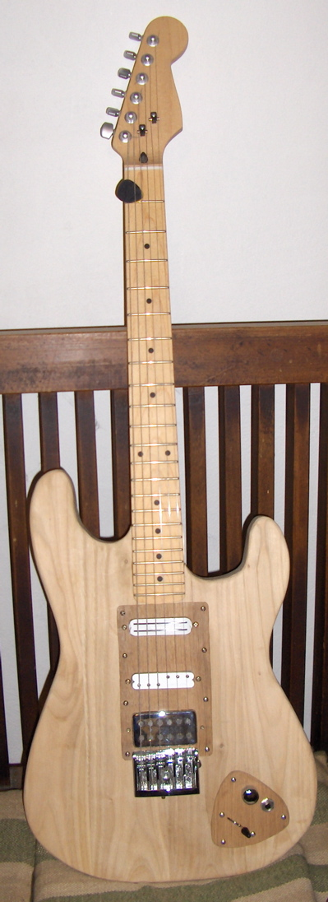
It's called the Vinocaster because it's made from wood reclaimed from a wine vat (tino), the one on the right in the picture below. It was left in the cantina in our new/old house. Achille, who's barrel it was reckoned it was chestnut (castagna) - I'm not 100% sure, it might be oak. Oak is the traditional barrel wood, but given that we live in a chestnut forest (Garfagnana) it's a distinct possibility. In appearance, when prepared, the local oak and chestnut wood is fairly indistinguishable. The reason I have any doubts is that in some places in the barrel woodworm had tunnelled quite deep. Chestnut is very high in tannin, and most old wood only has fairly surface worm attack.
Neither chestnut or oak is exactly known as a tone wood, but I assumed that given the hardness of the stuff, if I made the body suitably thick then it would worst case be rigid. It's worth noting that Fender's early designs were based largely on wood availability and ease of (factory) construction - two of my considerations.
My priorities were for sound and playability, appearance being well down the list. While most guitars aimed at being ergonomic tend to be lightweight, I actually wanted to go the other way, I feel more comfortable playing something with a bit of mass. I opted for a Stratocaster shape in part because I had the Squier to use as a guide, but mostly because I think Fender happened to hit on a remarkably good design.

I could have used the bottom of the barrel for the body, but decided (this time around at least) to use the staves. These were not only thinner and narrower than required, but also bent. A lot of time went into preparing these.
I don't seem to have a photo of the exact pieces I used for the body, but I cleaned up quite a few more for future use (thinking maybe window frames and furniture). Here's one of the staves from the older barrels prior to clean-up:
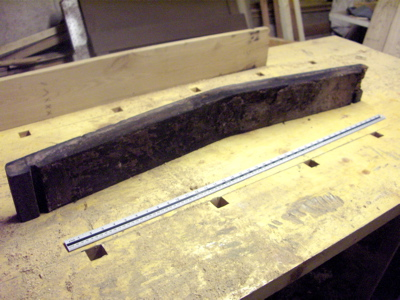
I cut these particular ones in half lengthwise because they were too bent to be much in full. The first bit of cleanup I did with a mallet and old chisel. The inside of the barrels was covered in a purple encrustation. I'm not sure if that was just grape residue or they'd been lined with a bit of gesso. It tasted of gravel.
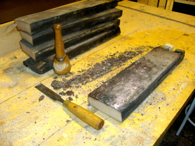
After getting the worst grolly off, I used an electric plane to partially level and smooth the surfaces. Messy.
With the pieces for the guitar I improvised a pair of tracks for the router so I could get at least one side flat. I'm completely inexperience with a router so ended up having to use a hand plane to clean up. I'd handplaned one edge square and flat, cut the width on the bandsaw and used the plane again to smooth the other edge. It sounds a lot more straightforward than it was - I went round and round on this, the bend of the staves was really persistent.
Early on I'd also made up a plywood template of the body shape, traced on paper from the Squier then cut out with the bandsaw, perimeter finished off with hand tools. Once I'd got the edges and one face of the staves flat I next glued them edge to edge.
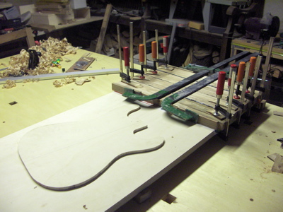
I'd decided to use epoxy resin for glue, and the best that was available from the nearest hardware shop was 48 hr setting, grey-coloured. Appearance was a low priority and I was fairly sure the joins would match well enough that it wouldn't be a real eyesore. I got one side of the pieces as flat as I could, and clamped against some thick flat plywood.
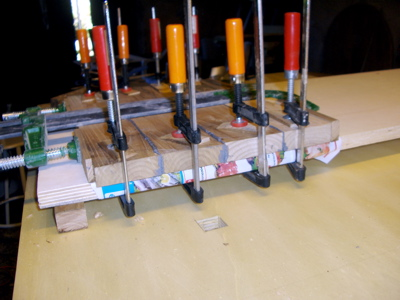
I was aiming for 2 inch thickness all over to start with, so needed two layers. The best faces produced from the edge gluing were fairly flat, a little hand smoothing got them good enough for me. Then I glued the two flats face-to-face.
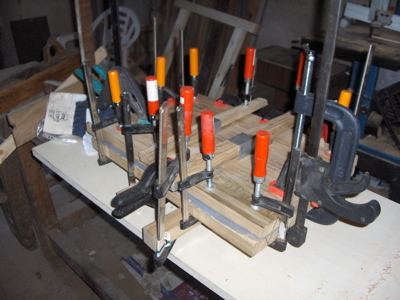
The result wasn't perfect, but I was very happy.
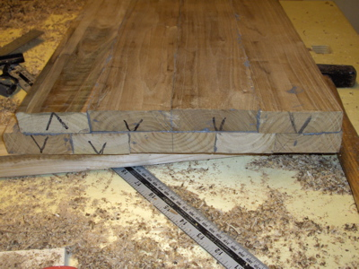
After planing the outside surfaces more level, I used the bandsaw to roughly cut out the shape.
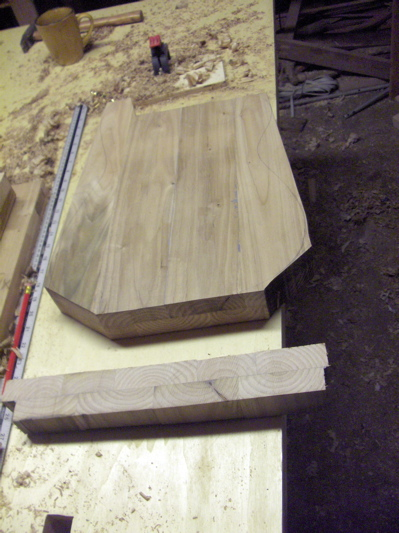
Thickness was about right.
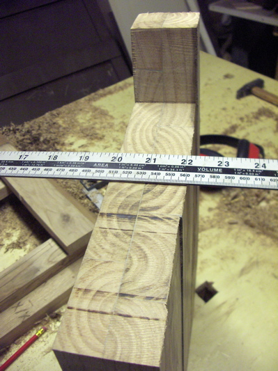
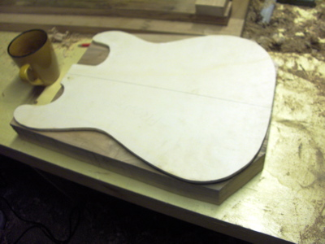
The staves appeared like they'd come from fairly small trees/branches, I thought it probably best to line them up as in the offcut from the end.
The way I'd planned it was for four parallel lengths across the front, five across the back. The idea being that the centre length on the back would act as a solid spine, parallel to the run of the strings.
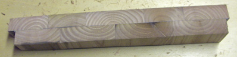
This is a lot thicker than the Squier.
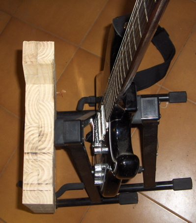
I couldn't get a narrow bandsaw blade locally so I just did my best with what I had, making lots of straight cuts into curves before cutting them. Although the edge surface came out really uneven and scorched quite a bit, the bandsaw was still a brilliant timesaver.
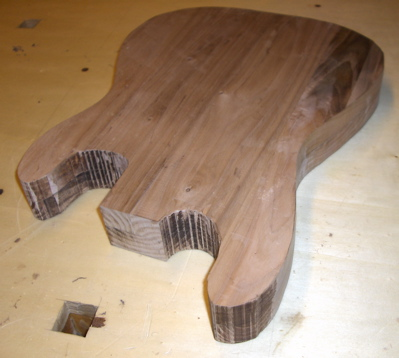
I then cleaned up the edges a bit with gouges and a spokeshave (an antique wooden one I had - I'd have bought a new steel one if any of the shops around here had stocked them). Time to start thinking about attaching the neck.
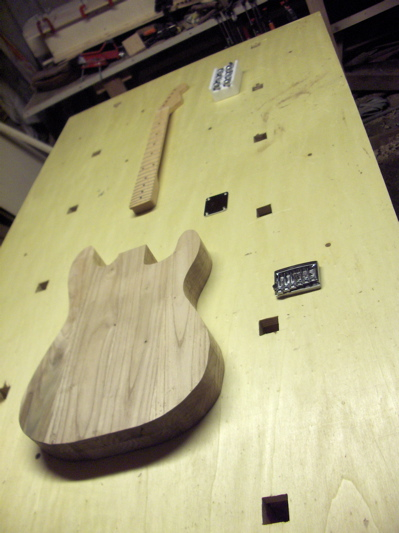
I roughed out the neck pocket by eye with the router, with a couple of fences to be on the safe side. The fences were a marvellous find in a hardware shop - they're rectangular tubes of aluminium, dead straight, intended for something like curtain rails (not sure).
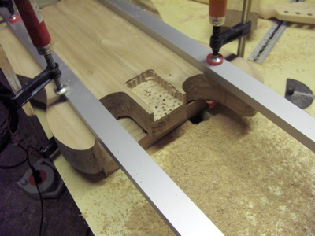
Seemed to me the best way of getting a good fit on the neck was to use it to put guides in place for the router. I'd got a router bit with bearings on it which could run directly along the edge of the aluminium bits (photo below).
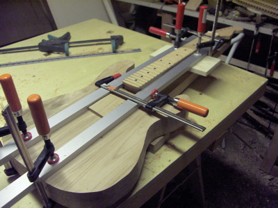
Despite taking time over this, my inexperience with the router showed, I messed up the inner edge a bit and the bottom was fairly uneven.
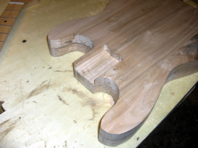
But the sides (which would have been the hardest part to fix) came out spot on. Very snug fit.
I then checked the alignment, taping the bridge in place and putting on a couple of strings.
Not bad at all. The bridge I'd bought allows some sideways adjustment of the string positions, so I was delighted to see the alignment was easily close enough.
Because the body was still 2" thick, I routed down an area on the other side (to 1.75") to take the fixing plate. I placed the back plate in the pocket to position the screw holes, drilling through from that side. The drill bit broke in the wood on the last hole. That caused a lot of grief.
A significant amount of cursing later, I had the neck attached.
Next I moved on to routing holes in the front for the pickup (I decided to try just the one at first) and controls. Again I roughed out the hole by eye. I'd bought templates from StewMac, held down with double-sided tape (which worked well).
The bearings are meant to run against the template, the blade cutting the edge of the wood exactly in line. That's the idea, but again I was a bit clumsy, somehow trimmed a chunk out of the template.
The result was fine though, after I realised that I'd not taken the thickness of the template into account when setting the cutter depth.
Because I wasn't sure quite how I wanted the controls, I made a hole to match the Strat's jack socket plate. For starters I'd use a regular jack socket and a single volume pot mounted in that area.
I then used an absurdly long drill bit to make a hole from the pickup to the control recess.
Next I made a temporary scratchplate and control front panel from flat plastic. Once done, I attached the rest of the hardware and wired up the pickup. It took a while but was relatively straightforward. Remarkably the action hardly needed any adjustment. Glee.

I then plugged it in and gave it a twiddle.
The pickup I'd chosen for the bridge was a TV Jones Magna'Tron in a regular humbucker-shaped mount. I'd been very worried this might have been a mistake because I'd not really thought it through before ordering. For a start I didn't need to have chosen the humbucker mount, I was making the hole into which it would sit after all (their standard mount looks a lot cooler, boo). But more importantly the Magna'Tron has fixed pole pieces, if the volume balance across the strings was out I'd be out of luck.
But TV Jones is known for magic, and this thing Just Worked. The sound was wonderful. More glee.
My favourite sound from the Squier was a mix of the bridge & middle pickups, I left the switch there most of the time. When I did an A-B test against the Squier the nearest sound to the Vinocaster (which now had earned a name) was with that bridge & middle configuration. What's more the timbre seemed that much richer somehow, and actually better balanced across the strings (even though I'd tweaked the Squier a lot).
Much glee.�
Ok, so far so good.
Next I routed recesses for two more pickups (forgot to photograph this bit). Then I contoured the body using gouges & the spokeshave, and gave it a basic sanding. I also cut some veneer from the spare barrel wood for scratchplate and controls, putting a thin layer of epoxy on the back followed by copper tape.

The wiring should have been straightforward, had I not ordered the wrong switch. I wanted a 5-way, I ended up with a 3-way. A bit of file work gave it the additional positions, but the circuit was another matter. I wanted a straight neck/neck+middle/middle/middle+bridge/bridge set of options. Can you see that here?
After a lot of sketching & trial & error I ended up near-enough. If the switch is fully in the bridge position it's silent, but tweaked a teeny fraction it works.
That one piece on the back looks a bit weird, but should look better after final sanding & finishing. Not bothered anyhow - it's on the back.
For the contours I approximated those of the Squier, with just a little more off the lower bout where my right arm rests.
It still needs cleaing up, but I am so pleased with that neck joint.
I think I've made a minor error with the machine heads. It seems these Sperzel locking tuners are actually of different heights, and low enough that string trees aren't needed (I used some fancy roller string trees, what the heck).
The white pickups are Seymour Duncans, a Duckbucker in the middle, Cool Rails in the neck. I had these plus a Lil'59 (pseudo-Gibson humbucker sound) on the Squier, left that behind because I already have a real humbucker. The Cool Rails gives a mellow, vaguely Strat-ish sound, very Jazz. The Duckbucker sounds very Strat but I'm not sure whether I'll leave it there - it's low output compared with the others, and in combination it pulls down the combined level (I suspect its coils are wired in parallel, but I think there were only 2 wires available).
The scratch/pickup plate wasn't intended to be so blocky, it started with 'ears' extending up the sides of the neck-end. But I cut the line across the cut-out the wrong place and it looked terrible, so I dispatched the ears. (It still remains to be seen whether the material I've used for these panels will be durable enough, could well end up changing).
The Sperzel roller bridge I'd chosen because it took the strings through its end, and not through the body. As it happens it's a nice thing in other ways - very solid feeling, and the rollers can be moved side-to-side in addition to the usual height/intonation adjustments.
As well as the deep contouring on the left of the lower bout, the whole front has a slight slope (3/16" at most) from the middle (on the perimeter of the the pickup/bridge area) to the edges.

The nut needed work, it was way too high. I think I've got it pretty close now, very careful file & knife work.
I've not got the setup optimal just yet, but the action is great.
I may well redo the control panel, not just because it's layout is a bit wonky. I still think the knob is too close to the playing area of the strings. That's the biggest design flaw of the Strat IMHO, the controls are in the way. It feels much better having open space all around that area.
The control placement isn't very good for the stand either, but I think I'll leave it there.
So aside from minor adjustements now I'm going to leave it bare a month or so to play and see if any changes are needed, especially to the contouring.